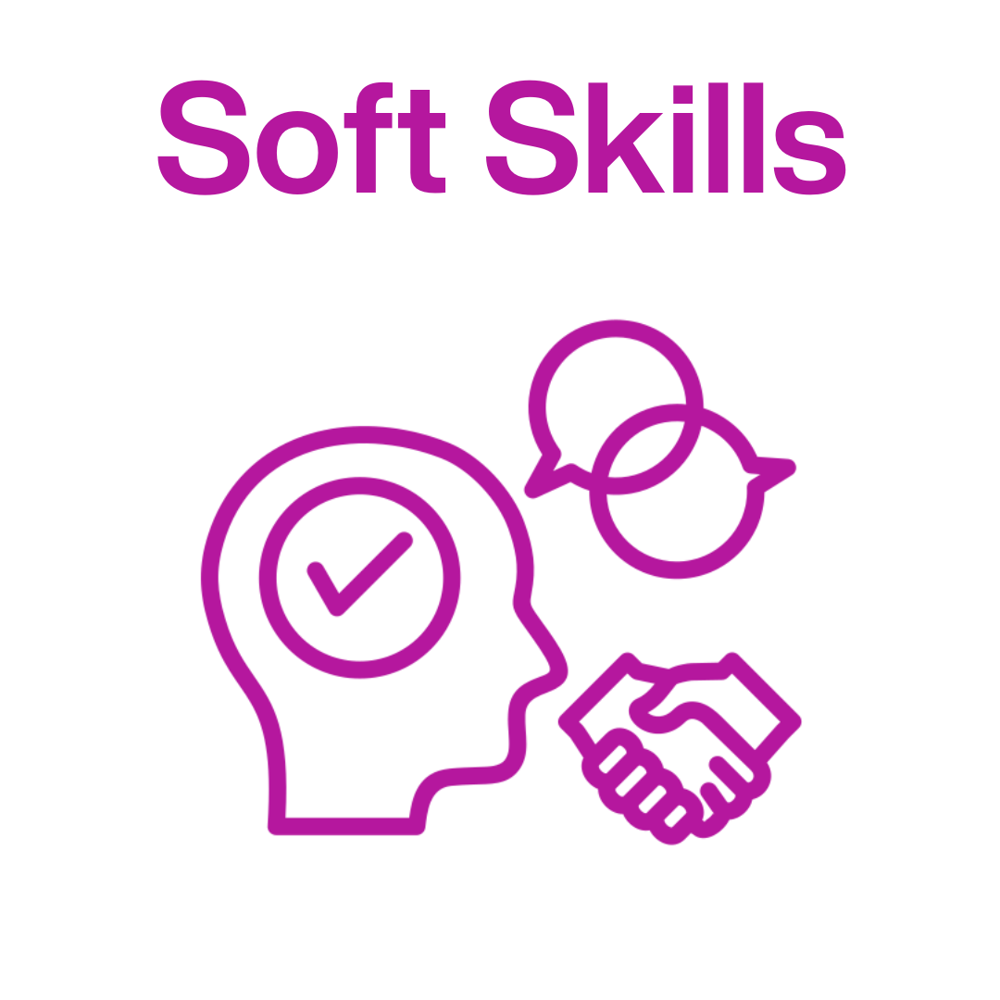
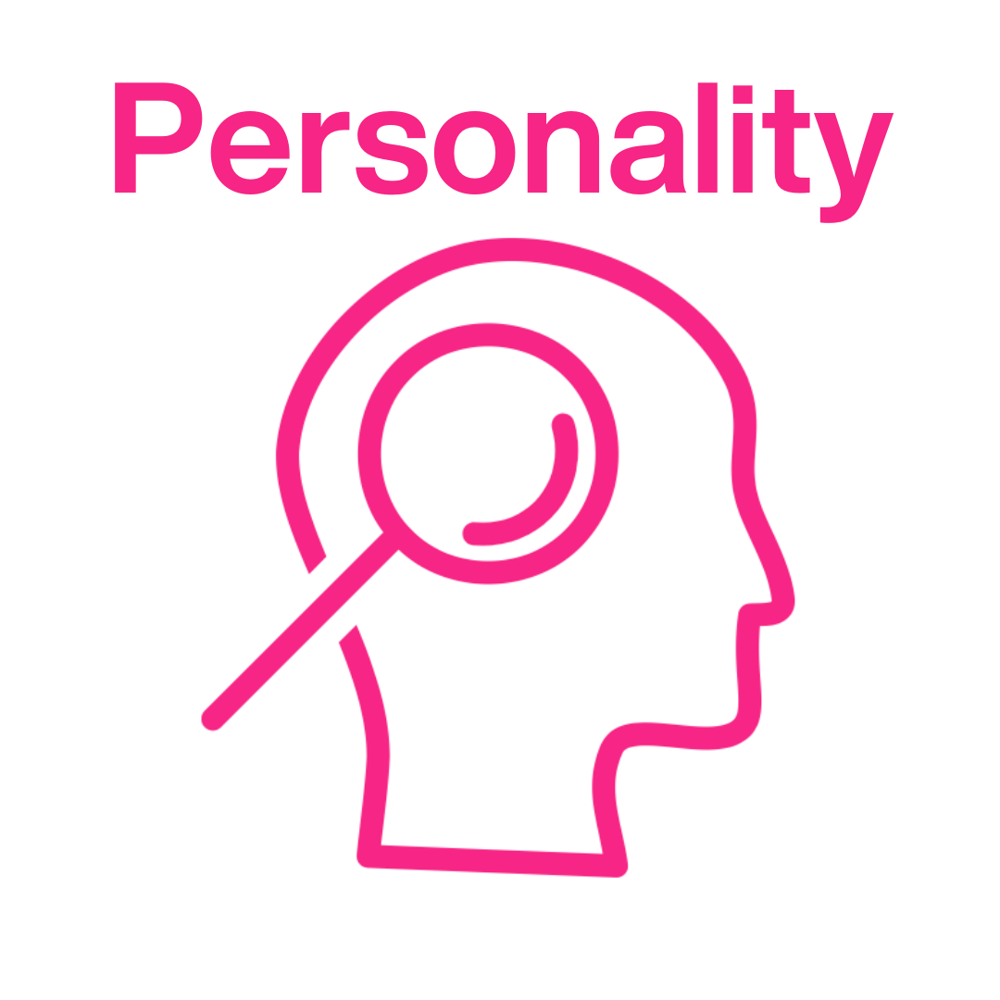

Average Day

- Ensure automation and AI software models work properly
- In charge of making sure all repeatable tasks work properly and efficiently
- Add new functionalities to existing processes
- Configure, execute, and verify data collected in system for accuracy
- Ensure everything runs smoothly on daily basis
Work Environment
- Hybrid: Employees are allowed to decide whether they want to work at office or from home, and most meetings will be through Zoom
- Part-time or full-time: 20-40 hours per week minimum, no upper limit, 7 am - 4 pm PT

Team Structure

- Software engineers
- Data scientists
- AI specialists
Potential Challenges
- Competing against other coworkers and people working in the same career
- Encountering and fixing bugs in code for AI models

Ideal Candidate

- Thought leadership (AI-driven mindset while dealing AI-associated risks)
- Strategic thinking
- Collaboration
- Problem-solving
- Flexibility
- Time management
- Communication
- Programming (Python, Java)
- Software engineering (DevOps workflows and tools)
- Analytics
- Applied mathematics

- Hard working
- Responsible
- Creative
- Empathetic